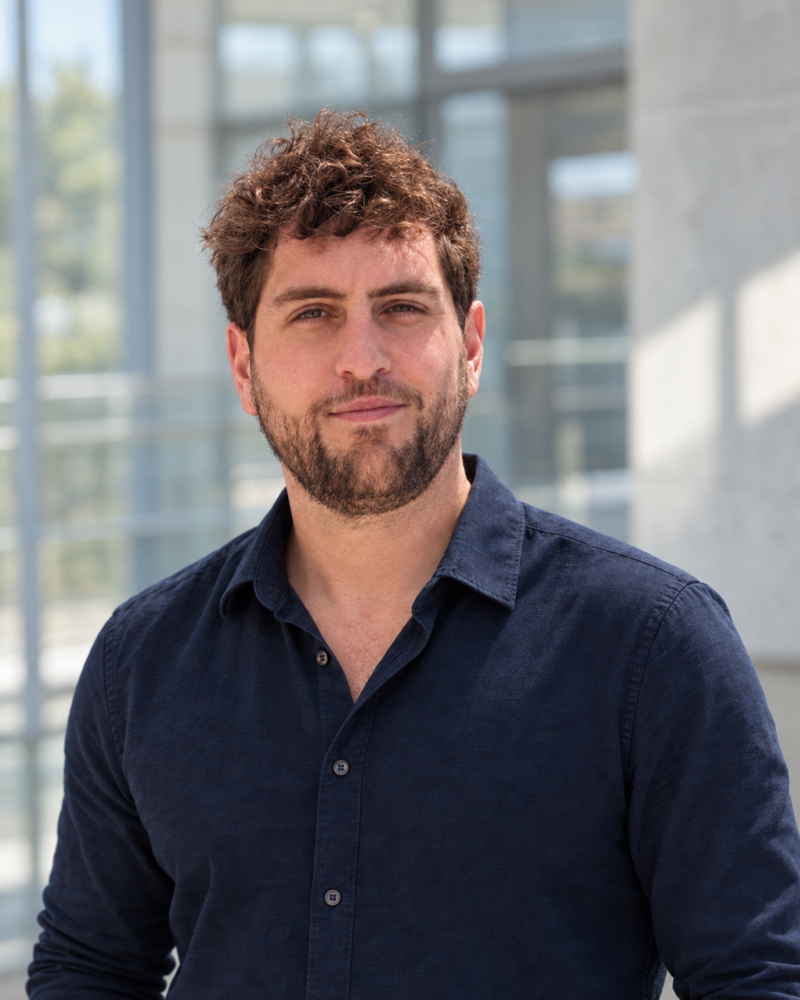

Coordinate
EU-funded research work package
Led the CORAERO work package on semiconductors and SARS-CoV-2 inactivation, translating project objectives into experimental strategy, coordinated measurements, tasks and timelines.
MaterialsSemiconductorsEnergy
I’m Miguel, a materials scientist and PhD physicist combining scientific depth with project coordination, experimental delivery and applied AI.

Profile
From scientific questions to practical work
I am a materials scientist, PhD physicist and chemist by training. My work connects semiconductor surfaces, thin films, photocatalysis and light-driven chemical transformations.
At DESY NanoLab and the University of Hamburg, I led a research work package within the EU-funded CORAERO project. I designed experimental programmes, coordinated measurements and collaborators, worked at international synchrotron facilities, and took responsibility for complex surface-science instruments.
I now bring that mix of rigorous analysis, structured problem solving and hands-on delivery to industrial R&D and technical projects—including AI systems that turn complex workflows into usable tools.
“Understand the system, structure the work, deliver the evidence.”
My approach to complex technical problems
Selected work
Coordination grounded in technical practice
Coordinate
Led the CORAERO work package on semiconductors and SARS-CoV-2 inactivation, translating project objectives into experimental strategy, coordinated measurements, tasks and timelines.
Execute
Prepared and delivered synchrotron campaigns at DESY, SOLEIL and ESRF, linking experimental design, surface preparation, advanced characterisation, data analysis and multidisciplinary collaboration.
Enable
Operated, maintained and optimised STM/SPM, XPS and FT-IRRAS systems; created procedures, supported users and resolved technical issues. Achieved STM imaging resolution not previously reached in the laboratory.
Featured research
Molecules, surfaces and functional materials
Four verified publications in American Chemical Society journals.
Combined surface-sensitive experiments and theoretical modelling to explain how cysteine binds to rutile TiO2(110).
Investigated adsorption and sulfur-selective photooxidation on anatase TiO2(101), connecting surface experiments with theoretical modelling.
Growth, epitaxy and oxidation of copper nanoparticles on rutile TiO2(110).
Contributed GISAXS work to a multidisciplinary study of UV-induced changes in virus-like particles adsorbed on TiO2.
Scientific domains
Technical range
Surface and interface science, TiO2, ZnO, photocatalytic semiconductors, thin films, coatings and metal nanoparticles.
Magnesium ultrathin films, hydrogen storage, electrochemistry, fuel cells, photo-assisted hydrogen and renewable energy materials.
Recycled polymers, polyolefin formulations and rheological, thermal and mechanical testing through Repsol’s RECICLEX project.
STM/SPM, XPS, FT-IRRAS, AFM, SEM, TEM, XRD, LEED, GISAXS, GIXRD, UHV, synchrotron methods and electrochemistry.
Experimental strategy, work-package coordination, stakeholder collaboration, PM2, technical reporting, scientific writing and presentations.
Python, TypeScript, Node.js, LLM applications, Google ADK, Model Context Protocol and multi-agent workflow design.
Applied AI
The same method, applied to software
I build AI tools by decomposing complex problems into clear, testable steps—an extension of how I approach experimental science.
A local-first, provider-neutral workflow that turns verified career evidence and explicit goals into job evaluations and tailored application content, with decisions and external actions kept under human control.
A full-stack application that turns typed or dictated nutrition and training information into structured sports-nutrition analysis through five specialised agents.
A workflow that turns furniture photographs into product identification, market research, pricing, bilingual listing copy, printable PDF sheets and configuration output.
Background
Experience & education
DESY NanoLab / University of Hamburg
Photocatalytic semiconductors, surface-driven mechanisms, work-package leadership, synchrotron programmes and advanced instrumentation.
Repsol
Recycled polymer formulations, material testing, technical investigation and documentation for R&D, quality and industrial teams.
Universidad Autónoma de Madrid
Magnesium ultrathin films for hydrogen storage, photo-assisted hydrogen production and electrochemical analysis.
University of Hamburg
Summa cum laude. Surface science, semiconductor materials, thin films and synchrotron research.
Universidad Autónoma de Madrid
9.00/10. Hydrogen, electrochemistry, photovoltaics and sustainable energy systems.
Universidad Autónoma de Madrid
8.44/10. Ranked 10th among 138 graduates that year.
University of Perugia
One academic year of chemistry courses and laboratory work in an international environment.
Next
Where I want to contribute
I’m interested in industrial R&D and technical projects where materials expertise supports practical delivery. My strongest fit is across materials, semiconductors, thin films, energy materials and scientific project coordination.
I’m also interested in technical consulting, AI implementation, automation and technology transfer where rigorous technical understanding meets execution.
Contact
Based in Hamburg, Germany, and open to conversations about materials R&D, semiconductor and thin-film projects, technical project coordination, and applied AI.